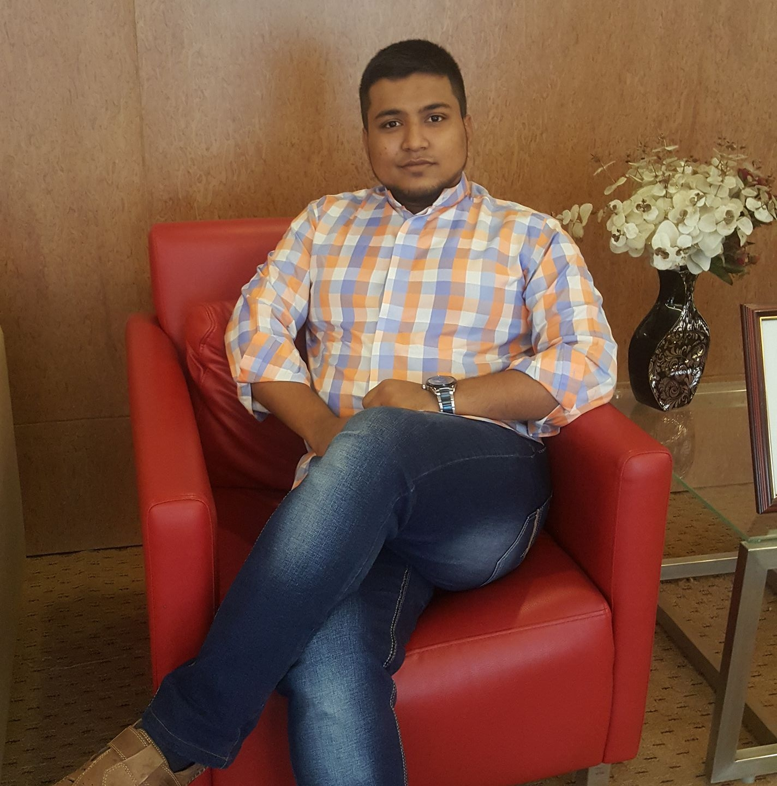

My Resume

Md Hasibur Rahman
Date of Birth : 8thMarch, 1994
Height : 5' 7"
Weight : 85 kg
Blood Group : A+
Mobile No : +8801708515200
Email : mhrahman1996@gmail.com
Adress: 25/1 Abul Khairat Road, Armanitola, Bongshal, Dhaka-1100
Mobile: +8801708515200
Email: mhrahman1996@gmail.com
Chekout My Linkedin
Educational Qualification
| Year |
Certificate |
Institution |
|
| 2018 |
CSE |
Independent University, Bangladesh |
| 2017 |
FDT |
Shanto-Mariam University of Creative Technology |
| 2013 |
HSC |
Ideal College |
| 2011 |
SSC |
Armanitola Gov't High School |
Family Details:
Father's Name : Hazi Md Manik Mia
Father's Occupation : Business
Mother's Name : Hazi Taslima Begum
Mother's Occupation : Housewife
Personal Activity:
Professional Skills : Business Structure, Import-export, Programming.
Hobbies : Travel, Movie.
Foods : Ice-Cream, Biriany.
Fruits : Mango.
Games : Criket, Football.